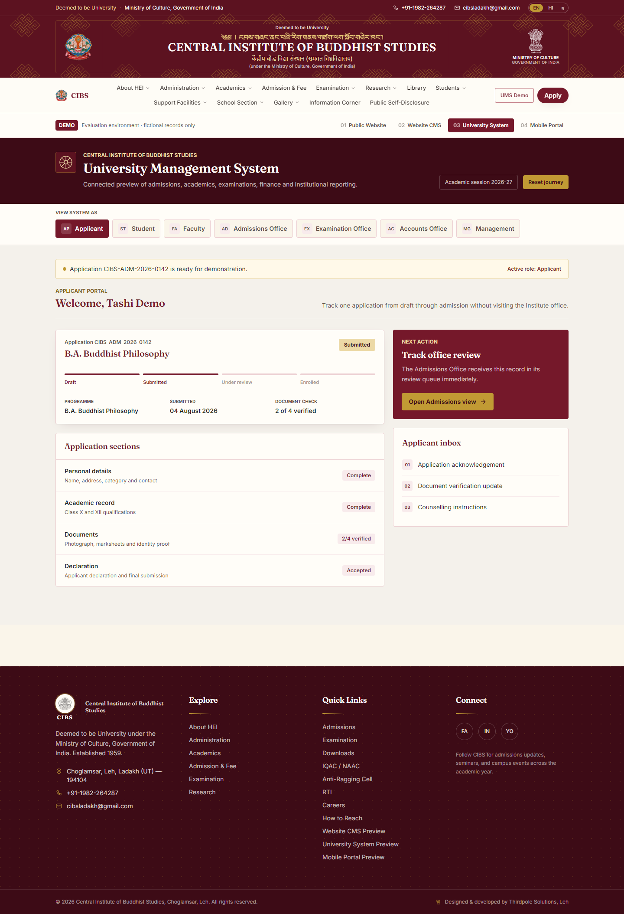

Workflow automation
Internal portals, approval flows, operational dashboards and integrations that replace repeated manual coordination.
Explore serviceIndependent software practice
Software systems for organizations losing time and revenue to fragmented workflows. We turn repeated email, spreadsheet and document handoffs into focused tools people can actually operate.
Focused offers
Each engagement begins with a specific bottleneck, a named user and a measurable operational outcome.
Internal portals, approval flows, operational dashboards and integrations that replace repeated manual coordination.
Explore serviceAdmissions, student-service and administrative workflows designed around institutions with multiple programmes or campuses.
Explore serviceStructured catalogue, enquiry, quotation and sales-handoff tools for manufacturers and export businesses.
Explore servicePublic websites and custom browser-based products where clarity, reliability and a strong conversion path matter.
Explore serviceEvidence, not claims
Live work and prototypes are labelled separately so you can judge the design and implementation directly.

A university digitisation concept spanning a public website, student mobile portal, management workflows and administrative publishing.

A privacy-conscious reconciliation product built for Indian accountants, CA firms and small businesses, with a Rust and WebAssembly matching engine.
How engagements work
Map users, handoffs, constraints and the cost of the current process.
Build the smallest useful workflow around one team and one success measure.
Connect data, permissions and production infrastructure after the pilot is accepted.
Document, monitor and improve the system under an agreed support scope.
Indicative engagement ranges
| Engagement | Typical output | Indicative range |
|---|---|---|
| Discovery sprint | Workflow map, requirements and implementation plan | INR 20,000-50,000 |
| Bounded software pilot | One working workflow for a defined user group | INR 75,000-300,000 |
| Production implementation | Integrations, permissions, deployment and documentation | From INR 200,000 |
| Website engagement | Focused brochure site through custom web experience | INR 25,000-150,000 |
Ranges are planning guidance, not quotations. Final scope depends on integrations, data migration, user roles, content and support requirements. Equivalent project-currency quotes are available for clients outside India.
Start with the workflow
A useful first message includes the users involved, the tools used today and what keeps going wrong.